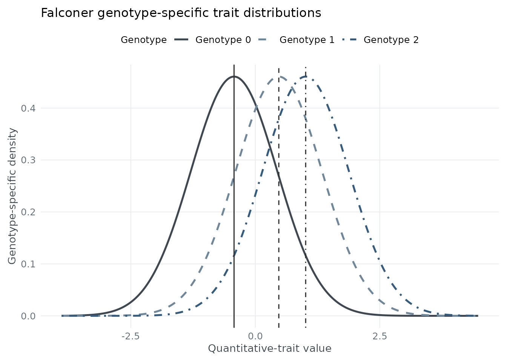
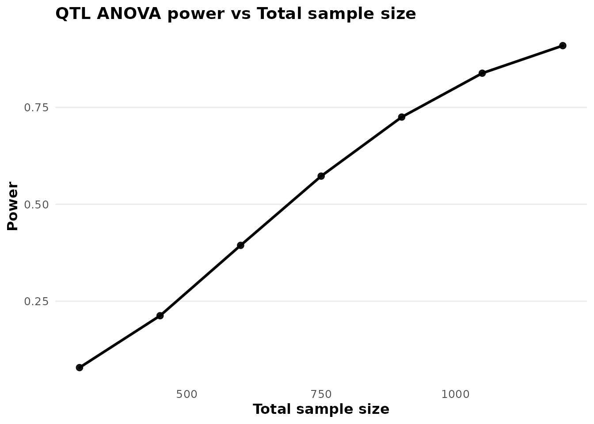
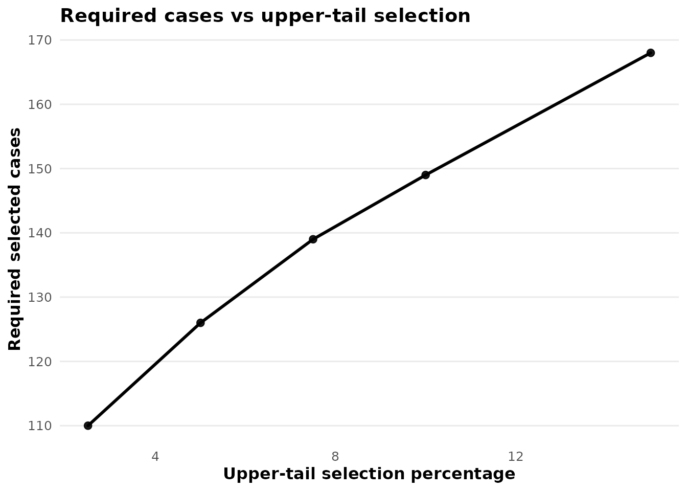
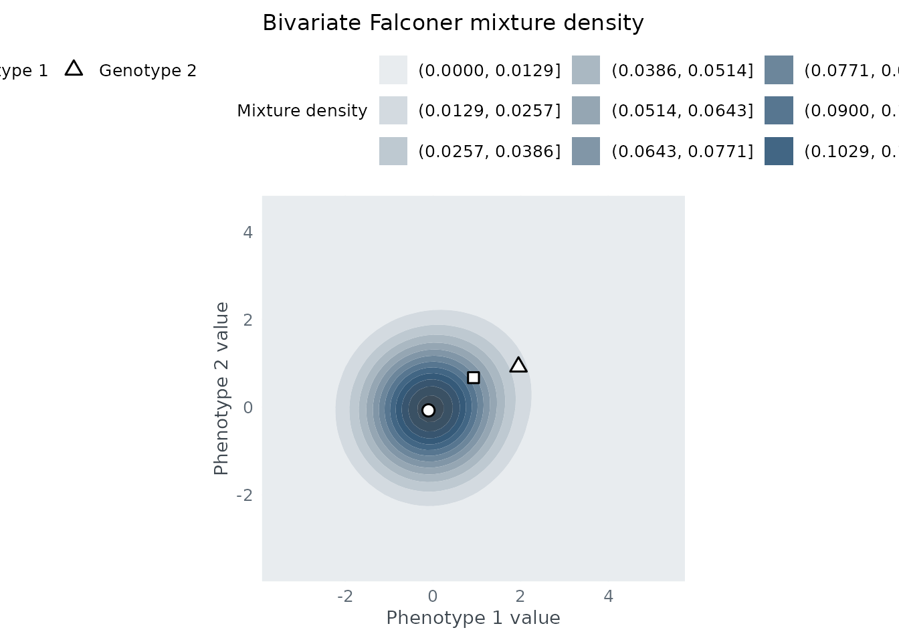
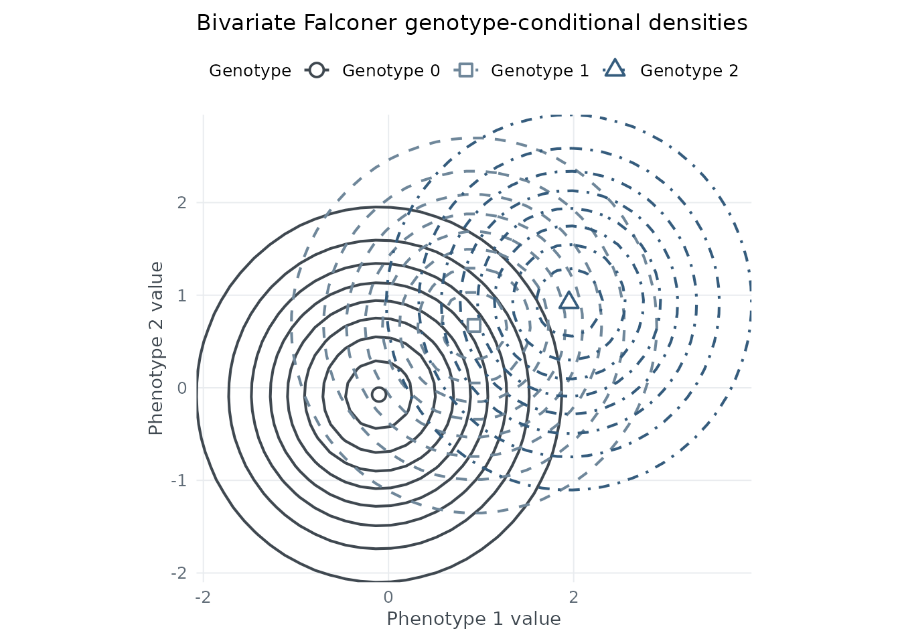
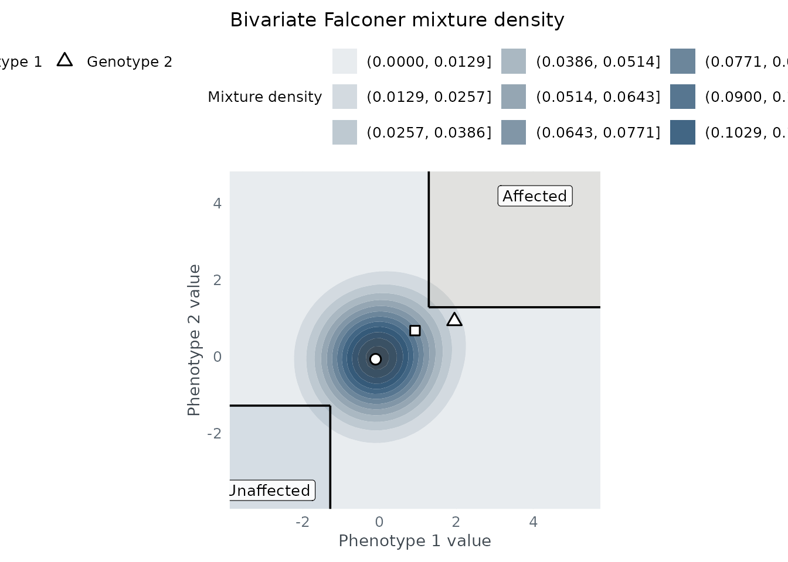

Quantitative-trait genetic association study design
paweh package authors
Source:vignettes/paweh-04-quantitative-trait-study-design.Rmd
paweh-04-quantitative-trait-study-design.RmdFrom binary outcomes to quantitative traits
For a quantitative trait, genotype can shift the phenotype
distribution rather than only changing disease probability.
paweh uses a classical, Falconer-style parameterization as
formulated for this study-design framework: QTL variance controls the
genetic contribution, tau controls dominance relative to
additivity, pd controls genotype frequencies, and residual
variation determines overlap among genotype-specific normal
distributions.
These assumptions define prospective operating characteristics. They do not fit a QTL model to observed subject-level data.
Visual intuition first: genotype-specific distributions
The separation and overlap of the three distributions explain why effect size and sample size matter before a formal power calculation is performed.
plot_qtl_genotype_distribution(
qtl_var = 0.25, tau = 0.25, pd = 0.25,
type = "density", scale = "density"
)
Genotype-specific quantitative-trait densities. Larger QTL variance separates genotype means relative to residual variation.
The x-axis is the quantitative trait. Heavy overlap implies weak genotype discrimination, while greater separation produces a stronger genotype- associated signal. Conditional normality and a common residual variance are part of this design model.
Full continuous-trait design: genotype-group ANOVA
When every recruited subject is measured on the continuous trait, a one-way ANOVA can compare the three genotype groups.
anova_power <- qtl_anova_power(
N = 996, alpha = 0.0001,
qtl_var = 0.025, tau = 0.5, pd = 0.15,
count_method = "rounded", verbose = FALSE
)
anova_mssn <- qtl_anova_mssn(
power = 0.80, alpha = 0.0001,
qtl_var = 0.025, tau = 0.5, pd = 0.15,
count_method = "rounded", multiple_of_three = TRUE,
verbose = FALSE
)
data.frame(
quantity = c("Power at N = 996", "Required total N", "Power at required N"),
value = c(anova_power$power, anova_mssn$N, anova_mssn$achieved_power)
)
#> quantity value
#> 1 Power at N = 996 0.8000478
#> 2 Required total N 996.0000000
#> 3 Power at required N 0.8000478The power curve below asks whether more total measurements compensate for a small QTL contribution.
plot_qtl_anova_power(
x_var = "N", x_values = seq(300, 1200, by = 150),
alpha = 0.0001, qtl_var = 0.025, tau = 0.5, pd = 0.15
)
One-way genotype-group ANOVA power as total sample size increases.
Extreme-phenotype sampling
Li et al. (2019) provide a Motivating published
application for sampling extreme quantitative phenotypes. Their
applications included methadone dose and yearling weight; the latter
used 486 Hanwoo steers and 35,968 SNPs. Their exact statistical
procedure is not paweh’s threshold-selected genotype
chi-square framework. The study is cited to motivate the design problem,
not as a reproduction.
In the paweh single-trait threshold design, upper-tail
subjects form selected cases, lower-tail subjects form selected
controls, and the middle is not selected. Upper and lower events are
distinct tails, not complements.
threshold_model <- qtl_falconer_threshold_parameters(
qtl_var = 0.025, tau = 0.5, pd = 0.15,
x_upper = 5, x_lower = 5,
verbose = FALSE
)
threshold_power <- qtl_threshold_chisq_power(
N_case = 126, alpha = 0.0001,
qtl_var = 0.025, tau = 0.5, pd = 0.15,
x_upper = 5, x_lower = 5, k = 1,
verbose = FALSE
)
threshold_mssn <- qtl_threshold_chisq_mssn(
power = 0.80, alpha = 0.0001,
qtl_var = 0.025, tau = 0.5, pd = 0.15,
x_upper = 5, x_lower = 5, k = 1,
verbose = FALSE
)
data.frame(
quantity = c(
"Upper threshold", "Lower threshold", "Power with 126 selected cases",
"Required selected cases", "Required selected controls",
"Expected source population screened for cases",
"Expected source population screened for controls"
),
value = c(
threshold_model$upper_threshold,
threshold_model$lower_threshold,
threshold_power$power,
threshold_mssn$N_case,
threshold_mssn$N_control,
threshold_mssn$expected_population_screened_cases,
threshold_mssn$expected_population_screened_controls
)
)
#> quantity value
#> 1 Upper threshold 1.6448536
#> 2 Lower threshold -1.6448536
#> 3 Power with 126 selected cases 0.8016659
#> 4 Required selected cases 126.0000000
#> 5 Required selected controls 126.0000000
#> 6 Expected source population screened for cases 2513.7381119
#> 7 Expected source population screened for controls 2526.1897442MSSN is the selected study sample. The source population that must be screened to find enough tail subjects can be much larger and is a separate operational quantity.
How selection stringency changes required sample size
plot_qtl_threshold_chisq_mssn(
x_var = "x_upper", x_values = c(2.5, 5, 7.5, 10, 15),
sample_size = "case",
power = 0.80, alpha = 0.0001,
qtl_var = 0.025, tau = 0.5, pd = 0.15,
x_lower = 5, k = 1,
title = "Required cases vs upper-tail selection"
)
Required selected cases as the upper-tail sampling percentage changes, with the lower tail fixed at 5%.
Making selection more extreme changes genotype enrichment and the number of selected subjects required. It also changes screening burden, which should be examined alongside statistical MSSN when planning recruitment.
Why analyze multiple traits jointly?
Yang et al. (2010) jointly analyzed serum uric acid and gout in the
Framingham Heart Study by combining univariate association tests. This
is a Motivating published application: correlated or
biologically related phenotypes can carry complementary genetic
information. Their method is not the Pillai framework implemented by
paweh, so no numerical reproduction is claimed.
For a paweh multivariate design, qtl_var
and tau become phenotype-specific vectors, pd
is shared, and cor_matrix describes phenotype correlation.
test = "pillai" uses a multivariate continuous-trait
design; test = "threshold_chisq" uses jointly selected
phenotype tails.
Published-example reproduction: Gordon et al. (2017)
The published pleiotropic example has allele frequency 0.05, QTL
variances 0.10 and 0.05, dominance ratios 0 and 0.50, independent
phenotypes, target power 0.80, and genome-wide
alpha = 5e-8.
gordon_mv <- qtl_multivariate_mssn_full(
power = 0.80, alpha = 5e-8,
qtl_var = c(0.10, 0.05),
tau = c(0, 0.50),
pd = 0.05,
cor_matrix = diag(2),
test = "pillai",
verbose = FALSE
)
data.frame(
quantity = c("Published integer MSSN", "paweh integer MSSN", "Historical fractional MSSN"),
value = c(326, gordon_mv$N, gordon_mv$historical_fractional_mssn)
)
#> quantity value
#> 1 Published integer MSSN 326.0000
#> 2 paweh integer MSSN 326.0000
#> 3 Historical fractional MSSN 325.5057This is an exact integer Published-example
reproduction: the paper and paweh both require 326
total individuals. The continuous historical root is 325.5057, which is
ceiled for recruitment.
The inverse calculation verifies power at that integer design using the same published parameters:
gordon_mv_power <- qtl_multivariate_power_full(
N = gordon_mv$N, alpha = 5e-8,
qtl_var = c(0.10, 0.05),
tau = c(0, 0.50),
pd = 0.05,
cor_matrix = diag(2),
test = "pillai",
verbose = FALSE
)
gordon_mv_power$power
#> [1] 0.8014862Visualizing the same validated multivariate model
The next contour uses the exact Gordon parameter vector rather than a visually convenient replacement. It shows the marginal two-phenotype distribution underlying the MSSN calculation: the three genotype-conditional densities are weighted by their Hardy–Weinberg frequencies and summed. Consequently, three genotypes do not imply three visible mixture modes. In this example the increaser allele is rare and the conditional distributions overlap, so the common genotype dominates the marginal surface.
plot_qtl_multivariate_contour(
qtl_var = c(0.10, 0.05),
tau = c(0, 0.50),
pd = 0.05,
cor_matrix = diag(2),
surface = "density",
grid_n = 60
)
Bivariate mixture density for the exact Gordon et al. Pillai MSSN example.
To inspect the model components themselves, use
surface = "genotype_density". These curves are conditional
on genotype: they are not frequency weighted, and each bivariate-normal
density integrates to one. The rare genotype therefore remains visible
even though it contributes little mass to the Gordon mixture.
plot_qtl_multivariate_contour(
qtl_var = c(0.10, 0.05),
tau = c(0, 0.50),
pd = 0.05,
cor_matrix = diag(2),
surface = "genotype_density",
grid_n = 60
)
Separate genotype-conditional densities for the exact Gordon et al. model parameters.
An interactive 3D view can display the same three conditional distributions as separate translucent surfaces. The following parameters are deliberately more separated than the published Gordon example so that the three hills and their mean locations are easy to inspect; this is an illustration, not a literature reproduction.
The guarded example is left unevaluated in the installed vignette to avoid embedding a multi-megabyte interactive widget; run it in an interactive R session to rotate and inspect the surfaces.
if (requireNamespace("plotly", quietly = TRUE)) {
plot_qtl_multivariate_surface3d(
qtl_var = c(0.95, 0.92),
tau = c(0, 0.50),
pd = 0.50,
cor_matrix = matrix(c(1, 0.15, 0.15, 1), 2, byrow = TRUE),
surface = "genotype_density",
grid_n = 35
)
}Both visualization interfaces are restricted to two phenotypes. The documented statistical backend can support more traits, but a contour plane or 3D surface over phenotype space requires exactly two.
Multivariate threshold selection uses AND logic
For test = "threshold_chisq", affected subjects satisfy
every upper-tail condition and unaffected subjects satisfy every
lower-tail condition:
All mixed or middle combinations are unselected. The figure keeps the Gordon model parameters and adds 10% joint-tail thresholds solely to demonstrate the selection geometry; it is not part of the published reproduction.
plot_qtl_multivariate_contour(
qtl_var = c(0.10, 0.05),
tau = c(0, 0.50),
pd = 0.05,
cor_matrix = diag(2),
x_upper = c(10, 10),
x_lower = c(10, 10),
surface = "density",
show_thresholds = TRUE,
grid_n = 60
)
Joint upper-right affected and lower-left unaffected regions. Selection uses AND, not OR, logic.
Numerical integration and scope
For joint threshold probabilities, paweh uses
deterministic mvtnorm::Miwa() integration through 20
dimensions. Higher-dimensional calculations use locally seeded
Genz–Bretz integration, restore the caller’s random-number state, and
retain integration error and status information. This modern numerical
implementation is not forced to agree with coarse historical Riemann-sum
approximations.
Current scope limits are important:
- genotype-specific phenotype distributions are normal under the model;
- residual variance and covariance assumptions determine overlap;
- the middle of threshold designs is excluded;
- multivariate threshold selection uses joint AND semantics;
- a multivariate trend test is not implemented;
- contour and 3D visualizations require exactly two phenotypes, even where the statistical backend supports more.
References
Genz A, Bretz F. Computation of Multivariate Normal and t Probabilities. Springer; 2009. doi:10.1007/978-3-642-01689-9.
Gordon D, Londono D, Patel P, Kim W, Finch SJ, Heiman GA. An analytic solution to computation of power and sample size for genetic association studies under a pleiotropic mode of inheritance. Human Heredity. 2017;81(4):194–209. doi:10.1159/000457135.
Li Y, Levran O, Kim J, Zhang T, Chen X, Suo C. Extreme sampling design in genetic association mapping of quantitative trait loci using balanced and unbalanced case-control samples. Scientific Reports. 2019;9:15504. doi:10.1038/s41598-019-51790-w.
Pillai KCS. Some new test criteria in multivariate analysis. Annals of Mathematical Statistics. 1955;26(1):117–121. doi:10.1214/aoms/1177728599.
Yang Q, Wu H, Guo C. Analyze multivariate phenotypes in genetic association studies by combining univariate association tests. Genetic Epidemiology. 2010;34(5):444–454. doi:10.1002/gepi.20497.
Session information
sessionInfo()
#> R version 4.6.1 (2026-06-24)
#> Platform: x86_64-pc-linux-gnu
#> Running under: Ubuntu 24.04.4 LTS
#>
#> Matrix products: default
#> BLAS: /usr/lib/x86_64-linux-gnu/openblas-pthread/libblas.so.3
#> LAPACK: /usr/lib/x86_64-linux-gnu/openblas-pthread/libopenblasp-r0.3.26.so; LAPACK version 3.12.0
#>
#> locale:
#> [1] LC_CTYPE=C.UTF-8 LC_NUMERIC=C LC_TIME=C.UTF-8
#> [4] LC_COLLATE=C.UTF-8 LC_MONETARY=C.UTF-8 LC_MESSAGES=C.UTF-8
#> [7] LC_PAPER=C.UTF-8 LC_NAME=C LC_ADDRESS=C
#> [10] LC_TELEPHONE=C LC_MEASUREMENT=C.UTF-8 LC_IDENTIFICATION=C
#>
#> time zone: UTC
#> tzcode source: system (glibc)
#>
#> attached base packages:
#> [1] stats graphics grDevices utils datasets methods base
#>
#> other attached packages:
#> [1] paweh_0.0.0.9000 BiocStyle_2.40.0
#>
#> loaded via a namespace (and not attached):
#> [1] gtable_0.3.6 jsonlite_2.0.0 dplyr_1.2.1
#> [4] compiler_4.6.1 BiocManager_1.30.27 tidyselect_1.2.1
#> [7] jquerylib_0.1.4 systemfonts_1.3.2 scales_1.4.0
#> [10] textshaping_1.0.5 yaml_2.3.12 fastmap_1.2.0
#> [13] ggplot2_4.0.3 R6_2.6.1 labeling_0.4.3
#> [16] generics_0.1.4 isoband_0.3.0 knitr_1.51
#> [19] htmlwidgets_1.6.4 tibble_3.3.1 bookdown_0.47
#> [22] desc_1.4.3 bslib_0.12.0 pillar_1.11.1
#> [25] RColorBrewer_1.1-3 rlang_1.3.0 cachem_1.1.0
#> [28] xfun_0.60 fs_2.1.0 sass_0.4.10
#> [31] S7_0.2.2 otel_0.2.0 cli_3.6.6
#> [34] withr_3.0.3 pkgdown_2.2.1 magrittr_2.0.5
#> [37] digest_0.6.39 grid_4.6.1 mvtnorm_1.4-2
#> [40] lifecycle_1.0.5 vctrs_0.7.3 evaluate_1.0.5
#> [43] glue_1.8.1 farver_2.1.2 ragg_1.5.2
#> [46] rmarkdown_2.31 pkgconfig_2.0.3 tools_4.6.1
#> [49] htmltools_0.5.9